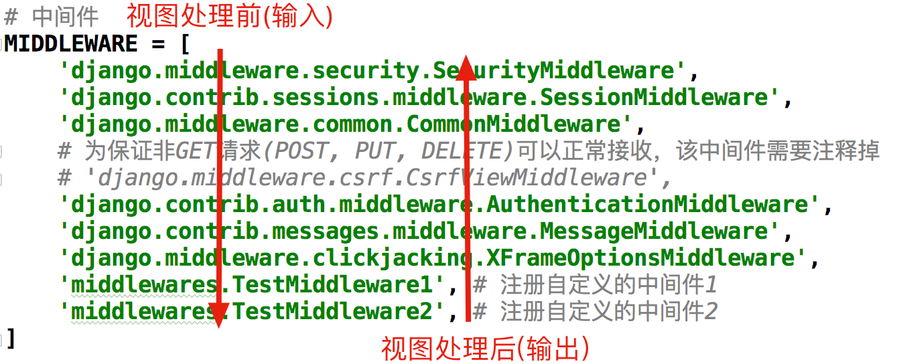

中间件
Django中的中间件是一个轻量级、底层的插件系统，可以介入Django的请求和响应处理过程，修改Django的输入或输出。中间件的设计为开发者提供了一种无侵入式的开发方式，增强了Django框架的健壮性。
我们可以使用中间件，在Django处理视图的不同阶段对输入或输出进行干预。
1 中间件的定义方法
- Django在中间件中预置了六个方法，这六个方法会在不同的阶段自动执行，对输入或输出进行干预。
- 1.1 初始化方法：
- 启动Django程序，初始化中间件时，自动调用一次，用于确定是否启用当前中间件
def __init__(self, get_response=None): pass
- 启动Django程序，初始化中间件时，自动调用一次，用于确定是否启用当前中间件
- 1.2 处理请求前的方法：(重要)
- 在处理每个请求前，自动调用，返回None或HttpResponse对象
def process_request(self, request): pass
- 在处理每个请求前，自动调用，返回None或HttpResponse对象
- 1.3 处理视图前的方法：（重要）
- 在处理每个视图前，自动调用，返回None或HttpResponse对象
def process_view(self, request, view_func, view_args, view_kwargs): pass
- 在处理每个视图前，自动调用，返回None或HttpResponse对象
- 1.4 处理模板响应前的方法：
- 在处理每个模板响应前，自动调用，返回实现了render方法的响应对象
def process_template_response(self, request, response): pass
- 在处理每个模板响应前，自动调用，返回实现了render方法的响应对象
- 1.5 处理响应后的方法：（重要）
- 在每个响应返回给客户端之前，自动调用，返回HttpResponse对象
def process_response(self, request, response): pass
- 在每个响应返回给客户端之前，自动调用，返回HttpResponse对象
- 1.6 异常处理：
- 当视图抛出异常时，自动调用，返回一个HttpResponse对象
def process_exception(self, request,exception): pass
- 当视图抛出异常时，自动调用，返回一个HttpResponse对象
定义中间件
# 导入中间件的父类
from django.utils.deprecation import MiddlewareMixin
class TestMiddleware1(MiddlewareMixin):
"""自定义中间件"""
def process_request(self, request):
"""处理请求前自动调用"""
print('process_request1 被调用')
def process_view(self, request, view_func, view_args, view_kwargs):
# 处理视图前自动调用
print('process_view1 被调用')
def process_response(self, request, response):
"""在每个响应返回给客户端之前自动调用"""
print('process_response1 被调用')
return response
定义好中间件后，需要在settings.py 文件中添加注册中间件
MIDDLEWARE = [
'django.middleware.security.SecurityMiddleware',
'django.contrib.sessions.middleware.SessionMiddleware',
'django.middleware.common.CommonMiddleware',
# 'django.middleware.csrf.CsrfViewMiddleware',
'django.contrib.auth.middleware.AuthenticationMiddleware',
'django.contrib.messages.middleware.MessageMiddleware',
'django.middleware.clickjacking.XFrameOptionsMiddleware',
'book.middleware.TestMiddleware1', # 添加中间件
]
定义一个视图进行测试
def middleware(request):
print('view 视图被调用')
return HttpResponse('OK')
执行结果
process_request1 被调用
process_view1 被调用
process_response1 被调用
2 多个中间件的执行顺序
- 在请求视图被处理前，中间件由上至下依次执行
- 在请求视图被处理后，中间件由下至上依次执行

示例：
定义两个中间件
from django.utils.deprecation import MiddlewareMixin
class TestMiddleware1(MiddlewareMixin):
"""自定义中间件"""
def process_request(self, request):
"""处理请求前自动调用"""
print('process_request1 被调用')
def process_view(self, request, view_func, view_args, view_kwargs):
# 处理视图前自动调用
print('process_view1 被调用')
def process_response(self, request, response):
"""在每个响应返回给客户端之前自动调用"""
print('process_response1 被调用')
return response
class TestMiddleware2(MiddlewareMixin):
"""自定义中间件"""
def process_request(self, request):
"""处理请求前自动调用"""
print('process_request2 被调用')
def process_view(self, request, view_func, view_args, view_kwargs):
# 处理视图前自动调用
print('process_view2 被调用')
def process_response(self, request, response):
"""在每个响应返回给客户端之前自动调用"""
print('process_response2 被调用')
return response
注册添加两个中间件
MIDDLEWARE = [
'django.middleware.security.SecurityMiddleware',
'django.contrib.sessions.middleware.SessionMiddleware',
'django.middleware.common.CommonMiddleware',
# 'django.middleware.csrf.CsrfViewMiddleware',
'django.contrib.auth.middleware.AuthenticationMiddleware',
'django.contrib.messages.middleware.MessageMiddleware',
'django.middleware.clickjacking.XFrameOptionsMiddleware',
'book.middleware.TestMiddleware1', # 添加
'book.middleware.TestMiddleware2', # 添加
]
执行结果
process_request1 被调用
process_request2 被调用
process_view1 被调用
process_view2 被调用
process_response2 被调用
process_response1 被调用